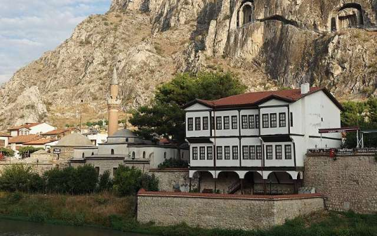

Osmanlı İmparatorluğu. Söğüt'te küçük bir beylik olarak doğan Osmanlı Devleti, üç kıtaya yayılan ve altı yüzyılı aşan bir imparatorluğa dönüştü. Osmanlı Beyliği, 13. yüzyılın sonunda Bilecik'in Söğüt ilçesi çevresinde ortaya çıktı. Bursa (1326) ve Edirne ilk başkentler oldu; Bursa'daki külliyeler ve İznik'teki Nilüfer Hatun İmareti erken Osmanlı mimarisinin güzel örnekleridir. Bursa ve Cumalıkızık, 2014'te 'Osmanlı İmparatorluğu'nun Doğuşu' adıyla UNESCO listesine girdi. 1452'de İstanbul Boğazı'nın en dar yerinde inşa edilen Rumeli Hisarı, ertesi yıl Fatih Sultan Mehmed'in İstanbul'u fethinin habercisiydi. İmparatorluk 16. yüzyılda Kanuni Sultan Süleyman ve Mimar Sinan döneminde zirveye ulaştı; Sinan'ın 'ustalık eserim' dediği Edirne Selimiye Camii ve Külliyesi 2011'den beri UNESCO listesindedir. İstanbul'daki Türk ve İslam Eserleri Müzesi ile Galata Mevlevihanesi bu kültürün zenginliğini anlatır. Osmanlı mirası yalnızca saraylarda değil, kent dokusunda da yaşar. UNESCO listesindeki Safranbolu'nun ahşap konakları, Birgi'deki Çakırağa Konağı, Amasya'daki Hazeranlar Konağı ve Tokat'taki Latifoğlu Konağı gündelik yaşamı; Doğubayazıt'taki İshak Paşa Sarayı ise imparatorluğun doğu ucundaki ihtişamı gösterir.
Söğüt'te küçük bir beylik olarak doğan Osmanlı Devleti, üç kıtaya yayılan ve altı yüzyılı aşan bir imparatorluğa dönüştü.
Osmanlı Beyliği, 13. yüzyılın sonunda Bilecik'in Söğüt ilçesi çevresinde ortaya çıktı. Bursa (1326) ve Edirne ilk başkentler oldu; Bursa'daki külliyeler ve İznik'teki Nilüfer Hatun İmareti erken Osmanlı mimarisinin güzel örnekleridir. Bursa ve Cumalıkızık, 2014'te 'Osmanlı İmparatorluğu'nun Doğuşu' adıyla UNESCO listesine girdi.
1452'de İstanbul Boğazı'nın en dar yerinde inşa edilen Rumeli Hisarı, ertesi yıl Fatih Sultan Mehmed'in İstanbul'u fethinin habercisiydi. İmparatorluk 16. yüzyılda Kanuni Sultan Süleyman ve Mimar Sinan döneminde zirveye ulaştı; Sinan'ın 'ustalık eserim' dediği Edirne Selimiye Camii ve Külliyesi 2011'den beri UNESCO listesindedir. İstanbul'daki Türk ve İslam Eserleri Müzesi ile Galata Mevlevihanesi bu kültürün zenginliğini anlatır.
Osmanlı mirası yalnızca saraylarda değil, kent dokusunda da yaşar. UNESCO listesindeki Safranbolu'nun ahşap konakları, Birgi'deki Çakırağa Konağı, Amasya'daki Hazeranlar Konağı ve Tokat'taki Latifoğlu Konağı gündelik yaşamı; Doğubayazıt'taki İshak Paşa Sarayı ise imparatorluğun doğu ucundaki ihtişamı gösterir.
Bu dönemi görebileceğiniz yerler
 Söğüt Ertuğrul Gazi MüzesiBilecik
Söğüt Ertuğrul Gazi MüzesiBilecik Bursa Türk İslam Eserleri MüzesiBursaNilüfer Hatun İmareti Türk İslam Eserleri MüzesiBursaOsmanlı Evi MüzesiBursaTürk İslam Eserleri MüzesiEdirne
Bursa Türk İslam Eserleri MüzesiBursaNilüfer Hatun İmareti Türk İslam Eserleri MüzesiBursaOsmanlı Evi MüzesiBursaTürk İslam Eserleri MüzesiEdirne Rumeli Hisarıİstanbul
Rumeli Hisarıİstanbul Galata Mevlevihanesi Müzesiİstanbul
Galata Mevlevihanesi Müzesiİstanbul Türk ve İslam Eserleri Müzesiİstanbul
Türk ve İslam Eserleri Müzesiİstanbul İshak Paşa SarayıAğrıKarabük Safranbolu MüzesiKarabükLatifoğlu KonağıTokat
İshak Paşa SarayıAğrıKarabük Safranbolu MüzesiKarabükLatifoğlu KonağıTokat Birgi Çakırağa Konağıİzmir
Birgi Çakırağa Konağıİzmir
Hazeranlar KonağıAmasya Kilitbahir Kale MüzesiÇanakkale
Kilitbahir Kale MüzesiÇanakkale Büyük HanLefkoşa
Büyük HanLefkoşa🎓 Kendinizi sınayın
1. Osmanlı Beyliği hangi ilçe çevresinde ortaya çıktı?
2. Rumeli Hisarı hangi yıl inşa edildi?
3. Mimar Sinan'ın 'ustalık eserim' dediği cami hangisidir?
4. Ahşap konaklarıyla UNESCO listesindeki Osmanlı kenti hangisidir?